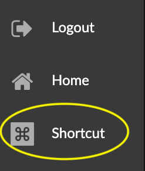

Shortcut Keys for Navigation and Selection Desktop keyboard and mouse shortcuts are provided for navigation controls, most items in the context menu, and a few other controls. Action Shortcut Keys Description Function Pan Left mouse click drag or 1+Left mouse click drag Pan right, left, up or down. Navigation Zoom mouse scroll or 2+left mouse click drag Drag up to zoom in, down to zoom out Navigation Fast zoom Ctrl+mouse scroll Scroll up for fast zoom in and down for zoom out. Navigation Rotate (Manual) Right mouse click drag or 3+Left mouse click drag Rotate right, left, up or down, centered on a selection, or the center of all nodes. Navigation Rotate (Automatic) Ctrl+O Toggle to rotate all data continuously around a selected center, or stop rotating. Navigation Orbit (Automatic) around x- y- or z- axis x: Ctrl+alt+shift+o y: Ctrl+o z: Ctrl+shift+o Toggle to rotate all data continuously around the x - y- or z- axis, or stop rotating. Navigation Stepwise Move Arrow key click (right, left, up, or down) Move all the data a step right, left, up, or down. Navigation Reset view Alt+Shift+R Reset entire view to the center of the graph. *NOTE:* Click the Fly Out icon to center all the graph data on the screen, and the Center To icon to center the view on selected nodes. Navigation Show info Ctrl+I or left mouse double click Displays the information window for a selected node. Information Hide menu Esc Hides a panel (i.e. Project, Table, etc.) or information window. Information Full Screen Ctrl+F Enter full screen mode. Press Esc to exit full screen. Navigation Select all nodes Ctrl+A Select all visible nodes. Selection Deselect all nodes Alt+A (Option+A) or Double click empty space Deselect all visible nodes. Selection Select a node or nodes Left mouse click or Shift+Left mouse click drag Select one or more nodes. Selection Center on a node c+Left mouse double click Selects and centers the view on a single node. Selection & Navigation Add a node or nodes to a selection Ctrl+Left mouse click or Ctrl+Left mouse click drag Add one or more nodes to a selection. Selection Subtract a node or nodes Alt+Left mouse click or Alt+Left mouse click drag Remove one or more nodes from a selection. Selection Select all orphaned (floating) nodes Shift+D Select all nodes with no connection. Selection Drag selection Left mouse click drag Drag (and pin) selected nodes and edges to a different position in the graph space. Selection Invert selection I or Shift+I Toggle to select nodes not currently selected. Selection Expand Ctrl+X Display a dialog to pull nodes connected to the selected nodes based on relationships from the project’s Neo4j database. Selection & Import Leaf Trimming Ctrl+L Collapse nodes with only one connection to a single node. Enter the shortcut key again to restore trimmed nodes. Selection & Editing Pin or Release Ctrl+P Toggle to pin, or release pinning of selected nodes. Selection Delete selection del or backspace Deletes selected nodes and edges. Selection & Editing Clear graph Ctrl+Shift+C Remove all data from the graph space. Selection & Editing Undo Ctrl+Z Immediately undo a Delete or Clear action. Editing To access a reference panel of shortcuts in your GraphXR project space, click the Shortcut icon located at the lower left of the browser window. 